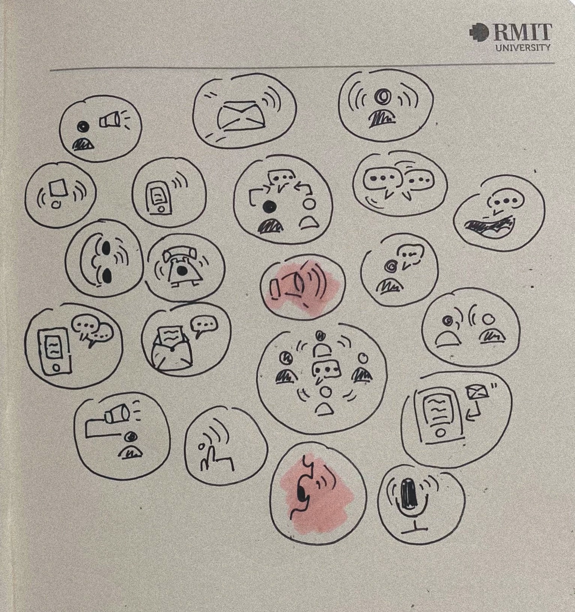
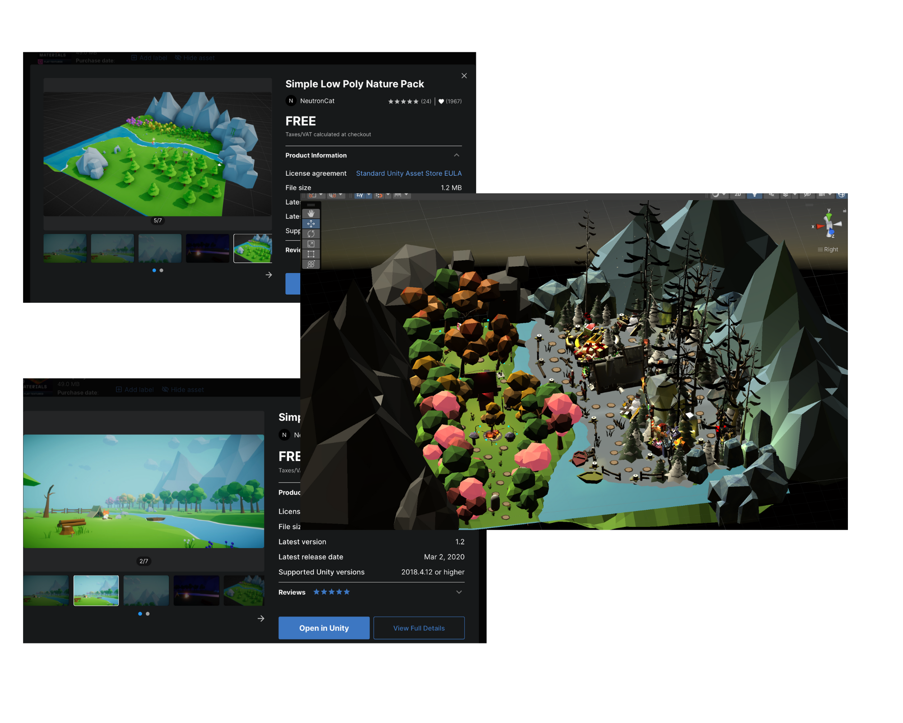

Hello
Welcome to my world
How about me ?
My name is Lily. I am a Vietnamese student at RMIT University.
I am passsionate about photographing and editing video.
Therefore, I choose Digital Media to support my hooby
in the future.
Here are my lastest projects
that I made from my first semester.
The lastest projects :
1. Premiere Pro
Practice the basic editing techniques from the video
‘’Night of living dead’’
‘’The original clip is about the trip of a couple who intend to visit their old place.
However, while the man is joking, the stranger immediately attacks them.
Finally, he dies because he tries to protect the girl’’
The girl visits an old place and unfortunately meet her ex-boyfriend.
He tells their old memories which makes her repulsive and unpleasant.
Therefore, she calls her protector to prevent him from annoyance.
The sence that the man and the stranger fight together has two means from different videos.
The original one is the man protect his friend from the stranger,
but the handmade clip is about his infringement of privacy and the stranger is being a kind man.
Video : Marshall McLuhan'' The medium is the message.
Audio : In search of ancient astronauts - Alan Landsburg Production.
Here is a story board which gives brief of my video.
As the title ‘’The message from astronauts’’,
the video is about exploration and findings on the Earth.
Therefore, the video will start with the value of life and the history of Earth by professional researchers.
After finding some old tools and getting weird connections from outsiders, astronauts decide to discover more about culture in the past, which contains ideas to unblock the secrets.
Even though they have used advanced technology from the past till now, there are still blocked secrets on Earth.
In conclusion, there is still a question about the organism outside the Earth.
2. Illustrator
There are 20 logos representing for announcements.
However, two logos are highlighted in pink color are the most impressive and common for transmitting information.
The top one is regarded as a sound speaker which is widely popular in speaking icons,
and the bottom one is represented by people's mouth when they are talking.
Therefore, both of them are essential icon for representing an communication.

In the left corner, there are some pink circles which are simply effective to demonstrate the stage of dreaming.
The first is the normal sleeping posture with the background of the Universe which is fairly mysterious in reality.
The next circle is a common sleeping material called pillows, which is a necessary material to start a dream.
The opposite one includes the piano with curve lines adding some symbols ''zzz'' as a tone of sleep music.
Next, the bottom icon is a dreaming of traveling and huge ambition which are the majority of people desires.
In the right corner, there are 4 icons relating to dreaming. The highest circle is a teddy which is a popular animal to sleep with.
The next one is a crown setting in a bubble as a dream of being princess or somethings in a magical world.
Besides, the right one with 2 ghosts is about nightmares; therefore, next to it is a dream catcher which is used for protecting sleepers from bad dreams or evil spirits.
3. Unity Hub
-
Moodboard

The changes make our life more interesting, so what happens if we live in four seasons in a day?
It makes our view more colorful each day.
Firstly, I begin with a cheerful mood by using bright colors and creating weird plants to show the sowing of crops and welcoming the spring.
As summer is well-known as the most popular season to camp,
I used the warm color palette to demonstrate its climate and put a camping theme with a fire animation.
Then, Autumn is famous for a romantic time, along with long benches under the orange fall foliage.
In contrast, winter seems to be the quietest and low season due to the decreasing of sunlight;
thereby, my new idea is concerned with Christmas Day, the most common festival in our life.
Assets using :
For themes which contains mountains, trees and the alvailable flowing river in the middle.
Additionally, the river is get used for separate winter with other seasons

Even though there are available assets in terms of trees and colors,
I remade the trees' shapes to suit the themes, such as the white pines and dried wood.
Moreover, I use my color palette to dye each present in different color style